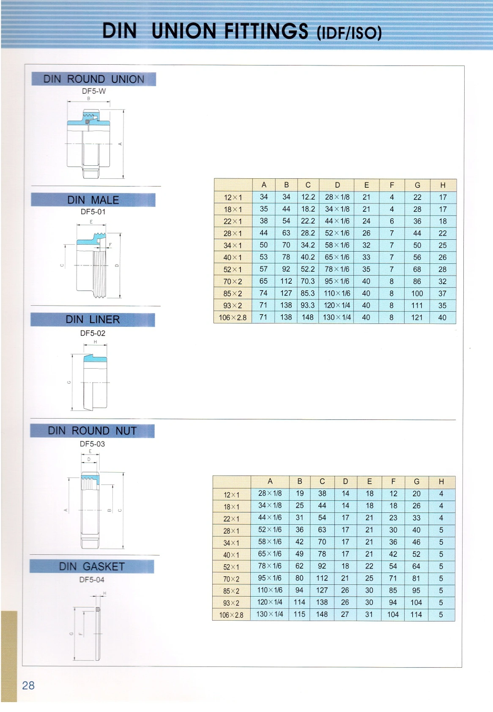

원본 카탈로그 발췌 · 현재 제품 사진이 아닙니다.
연결 부속 / DF5-01
DIN 메일
DIN Male
원본 명칭·도면 대조 / 수치 전사 대기DIN 메일의 과거 카탈로그 수록 자료입니다. 아래 도면과 표는 현재 판매 사양을 보증하지 않습니다.
- 모델 / 형식
- DF5-01
- 재질
- 확인 필요
- 규격
- 확인 필요
- 연결 방식
- 확인 필요
SPECIFICATIONS
사양 및 치수
- 과거 카탈로그 수록 정보입니다. 발주·설계 전 현행 도면, 재질, 단위와 공급 가능 여부를 확인하세요.
| 규격 | 외경 | 내경 | 길이 | 단위 |
|---|---|---|---|---|
| 구조화 수치 전사 대기 · 아래 원본 페이지에서 도면과 규격표를 확인하세요. | ||||
재질 304·316·316L 및 연결 규격은 서로 동일한 것으로 취급하지 않습니다. 제품별 원본 확인이 필요합니다.
DRAWINGS & DOCUMENTS
도면 및 자료

원본 페이지 이미지 다운로드 ↓원본 파일: merged.pdf / PDF 27쪽 · 인쇄 28쪽 · 현재 취급 상태: 과거 수록 품목 · 현재 취급 및 사양 확인 필요
원본 PDF 해당 페이지 ↗ 과거 카탈로그 다운로드 ↓같은 제품군 둘러보기
호환 부품 추천이 아닙니다. 결합 가능 여부는 별도 확인이 필요합니다.


LET’S TALK ABOUT YOUR REQUIREMENTS
필요한 부품부터,
제작과 수리까지.
제품명, 규격 또는 도면을 기준으로 문의 내용을 정리해 보세요.